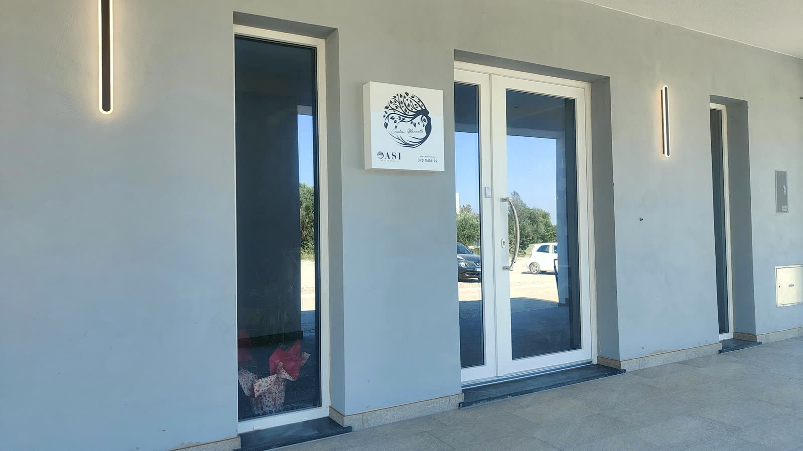

La media su Google
Su 66 recensioni pubbliche di chi è passato da qui.
Centro estetico · Lamezia Terme (CZ)
Il centro di Marinella Crialesi, in via Sen. Arturo Perugini. Epilazione definitiva, viso, corpo, mani e piedi, dermopigmentazione: ventinove trattamenti e tre tecnologie.
Il centro
In cabina si lavora su tre fronti (il viso, il corpo, le mani e i piedi), più l'epilazione definitiva, con tre tecnologie diverse a seconda della pelle e del pelo. I prodotti sono di nove marchi professionali diversi, non di un'unica linea.
Su 66 recensioni pubbliche di chi è passato da qui.
Laser a diodo 808 nm, luce pulsata ed elettrocoagulazione: si sceglie in base alla pelle e alla zona.
Da ISHI a Germaine de Capuccini: cosmetica di cabina, non prodotti da banco.
Il listino
Quello che si fa qui dentro, senza sigle e senza «e molto altro». Se cerchi qualcosa che non è in elenco, chiedilo al telefono.
Dalla pulizia di base al fotoringiovanimento, fino al trucco per il giorno del matrimonio.
Bendaggi, apparecchiature e cinque massaggi diversi, perché «massaggio» da solo non vuol dire niente.
Dalla cheratina alla ricostruzione, con la manicure a secco firmata Orly.
La parte con le apparecchiature: qui sotto c'è il capitolo per esteso.
I prezzi non sono pubblicati in questa pagina. Per averli, una telefonata.
Epilazione definitiva
Il pelo chiaro non risponde come quello scuro, e il labbro superiore non si tratta come le gambe. Per questo nel centro ci sono tre apparecchiature diverse invece di una.
Il laser a diodo per la depilazione permanente.
Lavora su superfici ampie seduta dopo seduta, diradando progressivamente invece di agire su un pelo alla volta.
Pelo per pelo, per i superflui nelle aree delicate del viso, dove laser e luce pulsata non sono la scelta giusta.
Sopracciglia ridisegnate a pigmento, con la stessa cura di un trucco che però non si toglie la sera.
«Sono state tutte gentili e cortesi… sono preparate… un'esperienza bellissima… provare per credere!»Teresa C. · recensione su Google
Il metodo
Qui aromaterapia e cromoterapia non sono un contorno da brochure: entrano nel protocollo CHROMA di ISHI, «l'aromaterapia a colori», come la chiamano loro.
Il resto è mestiere: si guarda la pelle, si sceglie la linea giusta fra quelle in cabina, si valuta insieme quante sedute servono.
I marchi in cabina
Nove case diverse: la cosmetica professionale di ISHI ed Ericson, gli smalti Orly, la cera a freddo CocoCera.
Dove siamo
Si lavora su appuntamento: per prenotare o chiedere un preventivo, il telefono è la via più diretta.
Via Sen. Arturo Perugini
88046 Lamezia Terme (CZ)
Apri in Google Maps
